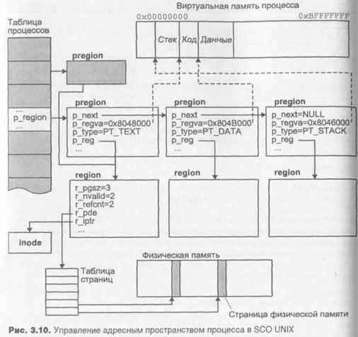
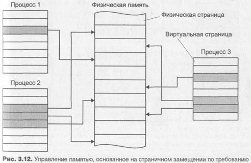

В реализации перечисленных функций существенную роль играют структуры данных, обеспечивающие удобное представление адресного пространства процесса для операционной системы. Фактический формат этих структур существенным образом зависит от аппаратной архитектуры и версии UNIX, поэтому в следующих разделах для иллюстрации тех или иных положений также использована операционная система SCO UNIX.
В SCO UNIX адресное пространство процесса разделено на несколько участков, называемых областями (region). Область представляет собой непрерывный участок виртуального адресного пространства процесса, который рассматривается ядром системы как отдельный объект, разделяемый или. защищенный от постороннего доступа. Область может использоваться для хранения данных различных типов, включая код, данные, разделяемую память, сегменты библиотек и отображаемые в память файлы. Каждая активная область представлена соответствующей структурой данных ядра и служит основой для управления памятью процесса.
Каждая область представлена собственным сегментом памяти. В совокупности со страничным механизмом организации виртуальной памяти такой подход предоставляет ядру системы большие возможности по эффективному управлению виртуальной памятью процесса.
Области могут совместно использоваться несколькими процессами, при этом ядру нет необходимости создавать дополнительные копии, нужно лишь задать требуемое отображение (виртуальные адреса области у различных процессов могут не совпадать). В качестве примеров разделяемых областей можно привести разделяемую память, разделяемые библиотеки Или отображаемые в память файлы. Часто код программы совместно используется несколькими родственными процессами. Информация о каж-Дой активной области хранится ядром в структуре данных region.
Поскольку одна и та же область может использоваться несколькими процессами, для каждого процесса ядро создает связанный список структур рregion (per process region), которые в свою очередь адресуют области, Используемые процессом. Указатель на список структур pregion для каж-Аого процесса находится в записи таблицы процессов — структуре proс.
Основные поля структур region и pregion приведены на рис. 3.10.

Помимо указателей p_next, организующих структуры pregion в виде связанного списка, и p_reg, обеспечивающих адресацию соответствующей структуры region, в каждой структуре pregion определен набор флагов p_flags, определяющий права доступа к области, режим блокирования 1 памяти и т. д. Поле p_type указывает на тип области. Оно может содержать одно из следующих значений:
|
Значение |
Описание |
|
РТ_UNUSED |
Область не используется |
|
PT_ТEXT |
Область содержит сегмент кода |
|
PT_DATA |
Область содержит сегмент данных |
|
РТ_STACK |
Область используется в качестве стека процесса |
|
РТ_SHMEM |
Область используется в качестве разделяемой памяти |
|
(продолжение) |
|
|
Значение |
Описание |
|
PT_LIBTXT |
Область содержит код библиотек |
|
PT_LIBDAT |
Область содержит данные библиотек |
|
PT_SHFIL |
Область используется для хранения файла, отображенного в память |
Наконец, поле p_regva задает виртуальный адрес области в адресном пространстве процесса.
Поля структуры region, приведенные на рис. 3.10, имеют следующие значения. Поле r_pgsz определяет размер области в страницах, из которых г_nvalid страниц присутствуют в оперативной памяти (см. далее раздел "Страничное замещение"). Несколько процессов могут ссылаться на одну и ту же область, поле r_refcnt хранит число таких ссылок. Поле r_pde адресует таблицу страниц области5. Поле r_iptr адресует inode файла, где располагаются данные области (например, для области кода, r_iptr будет указывать на inode исполняемого файла).
Фактическую информацию о структурах управления адресным пространством процесса можно получить с помощью команды crash(lM). В следующем примере таким образом определяется содержимое структур pregion процесса и характеристики соответствующих областей.
# crash
dumpfile = /dev/mem, namelist = /unix, outfile = stdout
> pregion 101
|
SLOT |
PREG |
REG# |
REGVA |
TYPE |
FLAGS |
|
101 |
0 |
12 |
0x700000 |
text |
rdonly |
|
|
1 |
22 |
0x701000 |
data |
|
|
|
2 |
23 |
OxVffffffc |
stack |
|
|
|
3 |
145 |
0x80001000 |
lbtxt |
rdonly |
|
|
4 |
187 |
0x80031000 |
lbdat |
pr |
Как можно увидеть из вывода команды crash(lM), с рассматриваемым процессом связаны пять областей: сегмент кода, данных и стека, а также сегменты кода и данных подключенной библиотеки. Столбец REG# определяет запись таблицы областей, где расположена адресуемая каждой pregion область region. Заметим, что значение в столбце REG# лишь отчасти соответствует полю p_reg структуры pregion, поскольку последнее является указателем, а не индексом таблицы. Столбец regva содержит значения виртуальных адресов областей.
Для областей, размер которых превышает 4 Мбайт, одной таблицы страниц недостаточно, и region хранит элементы каталога таблиц страниц в виде связанного списка.
С помощью полученной информации мы можем более детально рассмот-реть любую из областей процесса. Выведем данные о сегментах кода, дан-ных и стека:
>region 12 22 23
|
SLOT |
PGSZ |
VALID |
SMEM |
NONE |
SOFF NONE SOFF |
REF |
SWP |
NSW |
FORW |
BACK |
INOX |
TYPE |
flags |
|
12 |
1 |
1 |
1 |
0 |
0 |
11 |
0 |
0 |
15 |
5 |
154 |
stxt |
dona! |
|
22 |
3 |
1 |
0 |
0 |
0 |
1 |
0 |
0 |
238 |
23 |
154 |
priv |
dona |
|
23 |
2 |
1 |
1 |
0 |
0 |
1 |
0 |
0 |
135 |
24 |
|
priv |
stack |
Столбец pgsz определяет размер области в страницах, а столбец valid -число страниц этой области, находящихся в оперативной памяти. Как можно заметить, для сегментов данных и стека страниц недостаточно, поэтому может возникнуть ситуация, когда процессу потребуется обращение к адресу, в настоящее время отсутствующему в памяти. Заметим также, что столбец inox содержит индексы таблиц inode, указывающие на метаданные файлов, откуда было загружено содержимое соответствующих сегментов.
Мы можем взглянуть на дополнительные сведения об этом файле:
>inode 154
INODE TABLE SIZE = 472
|
SLOT 154 |
MAJ/MIN 1,42 |
FS 2 |
I NUMB 1562 |
RCNT 3 |
LINK 1 |
UID 123 |
GID 56 |
SIZE 8972 |
MODE f— 755 |
MNT 0 |
M/ST FLAGS R130 tx |
Из этой таблицы мы можем определить файловую систему, в которой расположен файл (maj/min), а также номер его дискового inode - numb. В данном случае он равен 1562. Выполнив команду ncheck(l), мы узнаем имя исполняемого файла, соответствующего исследуемому процессу:
$ ncheck -i 1562
/de/root:
1562 /home/andrei/CH3/test
Замещение страниц
Ранние версии UNIX работали на компьютерах PDP-11 с 16-разрядной архитектурой и адресным пространством 64 Кбайт. Некоторые модификации позволяли использовать отдельные адресные пространства для кода и данных, накладывая тем не менее существенные ограничения на размер адресного пространства процесса. Это привело к разработке различных схем программных оверлеев (overlay), использовавшихся как для прикладных задач, так и для ядра операционной системы. Суть этих методов заключается в том, что в неиспользуемые участки адресного пространства процесса записываются другие части програмы. Например, после запуска системы необходимость в функциях начальной инициализации отпадает и часть памяти, содержащая этот код, может быть использована для хранения других данных или инструкций операционной системы. Не говоря о значительной сложности такого подхода для разработчиков программного обеспечения, использование этих методов приводило к низкой переносимости программ, поскольку они в значительной степени зависели от конкретной организации памяти. Порой даже расширение оперативной памяти требовало внесения модификаций в программное обеспечение.
Механизмы управления памятью сводились к использованию свопинга. Процессы загружались в непрерывные области оперативной памяти целиком, выгружался процесс также целиком. Только небольшое число процессов могло быть одновременно размещено в памяти, и при запуске процесса на выполнение, несколько других процессов необходимо было переместить во вторичную память. Схема управления памятью, основанная на механизме свопинга, показана на рис. 3.11.
Механизм страничного замещения по требованию был реализован в UNIX в 1978 году на новом компьютере VAX-11/780, имевшем 32-разрядную архитектуру, 4 Гбайт адресуемого пространства и аппаратную поддержку страничного механизма. Первой системой UNIX, в которой управление памятью основывалось на страничном замещении по требованию, явилась версия 3.xBSD. Уже в середине 80-х годов все основные версии UNIX обеспечивали страничное замещение в качестве основного механизма, оставляя свопингу вторую роль.
Как уже говорилось в системах с виртуальной памятью, основанной на страничном механизме, адресное пространство процесса разделено на последовательные участки равной длины, называемыми страницами. Такая же организация присуща и физической памяти, и в конечном итоге любое место физической памяти адресуется номером страницы и смещением в ней. Деление адресного пространства процесса является логическим, причем логическим последовательным страницам виртуальной памяти при поддержке операционной системы и аппаратуры (MMU процессора) ста-вятся в соответствие определенные физические страницы оперативной памяти. Эта операция получила название трансляции адреса.
Однако механизм трансляции адреса является первым условием реализации виртуальной памяти, позволяя отделить виртуальное адресное пространство процесса от физического адресного пространства процессора. Вторым условием является возможность выполнения процесса, чье адресное пространство не имеет полного отображения на физическую память. Чтобы удовлетворить второму условию, каждая страница виртуальной памяти имеет флаг присутствия в оперативной памяти. Если адресуемая страница отсутствует в памяти, аппаратура генерирует страничную ошибку, которая обрабатывается операционной системой, в конечном итоге приводя к размещению этой страницы в памяти. Таким образом, для выполнения процесса является необходимым присутствие в памяти лишь нескольких страниц процесса, к которым в данный момент происходит обращение (рис. 3.12).
Вообще говоря, конкретный механизм страничного замещения зависит от того, как реализованы три основных принципа:
Обычно все физические страницы одинаково подходят для размещения, и принцип размещения не оказывает существенного влияния на работу механизма в целом. Таким образом эффективность управления памятью полностью зависит от двух остальных принципов: загрузки и замещения. В системах с чистым страничным замещением по требованию в память помещаются только требуемые страницы, а замещение производится, когда полностью отсутствует свободная оперативная память. Соответственно, производительность таких систем полностью зависит от реализации принципа замещения. Однако большинство современных версий UNIX не используют чистого страничного замещения по требованию. Вместо этого принцип загрузки предполагает размещение сразу нескольких страниц, обращение к которым наиболее вероятно в ближайшее время, а замещение производится до того, как память будет полностью занята.

Описанный механизм управления памятью допускает ситуацию, когда суммарный размер всех выполняющихся в данный момент процессов превышает размер физической памяти, в которой располагается только часть страниц процессов. Содержимое остальных страниц хранится вне физической памяти и должно быть загружено ядром, если процессу требуется доступ к этой части адресного пространства. Однако виртуальное адресное пространство процесса не зависит от фактического расположения физических страниц, и его размещение производится ядром при создании процесса или запуске новой программы. Виртуальное адресное пространство может изменяться в результате динамического размещения памяти (хипа) или увеличения стека процесса.
Таким образом, сам процесс "видит" только собственное виртуальное адресное пространство. Однако физические страницы, соответствующиеэтому адресному пространству могут в действительности располагаться в различных местах, как это показано на рис. 3.13.
Виртуальный адрес может быть ассоциирован со страницей физической памяти. Обращение к виртуальным адресам из диапазона, соответствующего этой странице, приведет к обращению к соответствующим адресам физической памяти. От операционной системы не требуется дополнительных действий при обращении к такой странице. Страница может быть перемещена в область свопинга, если требуется освободить память для другого процесса. Обращение к виртуальному адресу, соответствующему этой странице, приведет к страничной ошибке, что, в свою очередь, потребует от ядра размещения новой страницы в памяти, записи ее содержимого из области свопинга и соответствующего изменения карты отображения (записи таблицы страниц) таким образом, чтобы виртуальный адрес указывал на новую страницу. Если потребуется опять переместить такую страницу в область свопинга, ядро сделает это только в том случае, если с момента последней загрузки произошла модификация страницы.
Адресуемая страница отсутствует в памяти, но ее содержимое находится в файле на диске. Типичными примерами такой ситуации могут служить страницы сегмента кода или области файлов, отображенных в памяти. Обращение к виртуальному адресу, соответствующему этой странице, приведет к страничной ошибке, что, в свою очередь, потре бует от ядра размещения новой страницы в памяти, записи ее содер жимого из файла и соответствующего изменения карты отображения (записи таблицы страниц) таким образом, чтобы виртуальный адрес указывал на новую страницу.
Адресуемая страница отсутствует в памяти и она не ассоциирована ни с областью свопинга, ни с файлом. Типичным примером такой ситуации является страница сегмента неинициализированных данных. Об ращение к такой странице потребует размещения новой страницы, заполненной нулями.
Ядро должно иметь достаточную информацию обо всех страницах, отсутствующих в памяти для того, чтобы при необходимости загрузить их в память. Для страниц, перемещенных во вторичную память, необходимо знать их расположение в области свопинга. Ядро должно иметь возможность распознать, что страницу необходимо заполнить нулями или загрузить ее содержимое из файла. В последнем случае ядро должно хранить местонахождение файла в файловой системе. Таким образом, наряду с картами отображения, необходимыми для трансляции адреса, ядро хранит ряд структур данных для поиска и загрузки отсутствующих в памяти страниц.
Различные версии UNIX используют разные подходы. Например, в SCO UNIX для описания страниц используются структуры pfdat и связанные с ними дескрипторы дисковых блоков. В UNIX 4.3BSD для этого используются поля записи таблицы страниц.
Страничное замещение имеет ряд важных преимуществ по сравнению со свопингом:
О Размер программы ограничивается лишь размером виртуальной памяти, который для компьютеров с 32-разрядной архитектурой составляет 4 Гбайт.
- Запуск программы происходит очень быстро, т. к. не требуется загружать в память всю программу целиком.
- Значительно большее число программ может быть загружено и выполняться одновременно, т. к. для выполнения каждой из них в каждый момент времени достаточно всего нескольких страниц.
- Перемещение отдельных страниц между оперативной и вторичной памятью требует значительно меньших затрат, чем перемещение процесса целиком.
Планирование выполнения процессов
Как и оперативная память, процессор является разделяемым ресурсом, ко-торый должен быть справедливо распределен между конкурирующими процессами. Планировщик процессов как раз и является той подсистемой ядра, которая обеспечивает предоставление процессорных ресурсов процессам, выполняющимся в операционной системе. UNIX является систе- мой разделения времени, это означает, что каждому процессу вычисли- ] тельные ресурсы выделяются на ограниченный промежуток времени, после чего они предоставляются другому процессу и т. д. Максимальный временной интервал, на который процесс может захватить процессор, называется временным квантом (time quantum или time slice). Таким образом создается иллюзия, что процессы выполняются одновременно, хотя в действительности в каждый момент времени выполняется только один (на однопроцессорной системе) процесс.
UNIX является многозадачной системой, а это значит, что одновременно выполняются несколько приложений. Очевидно, что приложения предъявляют различные требования к системе с точки зрения их планирования и общей производительности. Можно выделить три основных класса приложений:
- Интерактивные приложения. К этому классу относятся командные интерпретаторы, текстовые редакторы и другие программы, непосредственно взаимодействующие с пользователем. Такие приложения большую часть времени обычно проводят в ожидании пользовательского ввода, например, нажатия клавиш клавиатуры или действия мышью. Однако они должны достаточно быстро обрабатывать такие действия, обеспечивая комфортное для пользователя время реакции. Допустимая задержка для таких приложений составляет от 100 до 200 миллисекунд.
- Фоновые приложения. К этому классу можно отнести приложения, не требующие вмешательства пользователя. Примерами таких задач могут служить компиляция программного обеспечения и сложные вычислительные программы. Для этих приложений важно минимизировать суммарное время выполнения в системе, загруженной другими процессами, порожденными, в частности, интерактивными задачами. Более того, предпочтительной является ситуация, когда интерактивные приложения не оказывают существенного влияния на среднюю производительность задач данного класса.
- Приложения реального времени. Хотя система UNIX изначально разрабатывалась как операционная система разделения времени, ряд приложений требуют дополнительных системных возможностей, в частности, гарантированного времени совершения той или иной операции, времени отклика и т. п. Примером могут служить измерительные комплексы или системы управления. Видеоприложения также могут обладать определенными ограничениями на время обработки кадра изображения.
Планирование процессов построено на определенном наборе правил, исходя из которых планировщик выбирает, когда и какому процессу предоставить вычислительные ресурсы системы. При этом желательным является удовлетворение нескольких требований, например, минимальное время отклика для интерактивных приложений, высокая производительность для фоновых задач и т. п. Большинство из этих требований не могут быть полностью удовлетворены одновременно, поэтому в задачу планировщика процессов входит нахождение "золотой середины", обеспечивающей максимальную эффективность и производительность системы в целом.
В этом разделе мы рассмотрим основные принципы и механизмы планирования в традиционных UNIX-системах. Начнем с обработки прерываний таймера, поскольку именно здесь инициируются функции планирования и ряд других действий, например, отложенные вызовы (callout) и алармы (alarm).
Традиционные алгоритмы планирования UNIX обеспечивают возможность одновременного выполнения интерактивных и фоновых приложений. Таким образом, они хорошо подходят для систем общего назначения с несколькими подключенными пользователями, работающими с текстовыми и графическими редакторами, компилирующими программы и выполняющими вычислительные задачи. Эти алгоритмы обеспечивают малое время реакции для интерактивных приложений, следя в то же время, чтобы фоновым громоздким задачам справедливо предоставлялись ресурсы системы. Современные системы поддерживают выполнение задач реального времени, однако в данном разделе мы остановимся на планировании системы разделения времени.
Планирование процессов в UNIX основано на приоритете процесса. Планировщик всегда выбирает процесс с наивысшим приоритетом. Приоритет процесса не является фиксированным и динамически изменяется системой в зависимости от использования вычислительных ресурсов, времени ожидания запуска и текущего состояния процесса. Если процесс готов к запуску и имеет наивысший приоритет, планировщик приостановит выполнение текущего процесса (с более низким приоритетом), даже если последний не "выработал" свой временной квант.
Традиционно ядро UNIX является "непрерываемым" (nonpreemptive). Это означает, что процесс, находящийся в режиме ядра (в результате системного вызова или прерывания) и выполняющий системные инструкции, не может быть прерван системой, а вычислительные ресурсы переданы другому, более высокоприоритетному процессу. В этом состоянии выполняющийся процесс может освободить процессор "по собственному желанию", в результате недоступности какого-либо ресурса перейдя в состояние сна. В противном случае система может прервать выполнение процесса только при переходе из режима ядра в режим задачи. Такой подход значительно упрощает решение задач синхронизации и поддержания целостности структур данных ядра.
Каждый процесс имеет два атрибута приоритета: текущий приоритет, на основании которого происходит планирование, и заказанный относительный приоритет, называемый nice number (или просто nice), который задается при порождении процесса и влияет на текущий приоритет.
Текущий приоритет варьируется в диапазоне от 0 (низкий приоритет) до 127 (наивысший приоритет). Процессы, выполняющиеся в режиме задачи, имеют более низкий приоритет, чем в режиме ядра. Для режима задачи приоритет меняется в диапазоне 0—65, для режима ядра — 66—95 (системный диапазон).
Процессы, приоритеты которых лежат в диапазоне 96—127, являются процессами с фиксированным приоритетом, не изменяемым операционной системой, и предназначены для поддержки приложений реального времени7.
Процессу, ожидающему недоступного в данный момент ресурса, система определяет значение приоритета сна, выбираемое ядром из диапазона системных приоритетов и связанное с событием, вызвавшее это состояние. В табл. 3.3 приведены значения приоритетов сна для систем 4.3BSD UNIX и SCO UNIX (OpenServer 5.0). Заметим, что направление роста значений приоритета для этих систем различно — в BSD UNIX большему значению соответствует более низкий приоритет.
Схема нумерации текущих приоритетов различна для различных версий UNIX. Например, более высокому значению текущего приоритета может соответствовать более низкий фактический приоритет планирования. Разделение между приоритетами режима ядра и задачи также зависит от версии. Здесь мы привели схему, используемую в SCO UNIX, при которой большему значению соответствует более высокий приоритет.
Таблица 3.3. Системные приоритеты сна
|
Событие |
Приоритет 4.3BSD UNIX |
Приоритет SCO UNIX | |
|
Ожидание загрузки в память сегмента/страницы (свопинг/страничное замещение) |
0 |
95 |
|
Ожидание индексного дескриптора |
10 |
88 |
|
Ожидание ввода/вывода |
20 |
81 |
|
Ожидание буфера |
30 |
80 |
|
Ожидание терминального ввода |
|
75 |
|
Ожидание терминального вывода |
|
74 |
|
Ожидание завершения выполнения |
|
73 |
|
Ожидание события — низкоприоритетное состояние сна |
40 |
66 |
Когда процесс пробуждается, ядро устанавливает значение текущего приоритета процесса равным приоритету сна. Поскольку приоритет такого процесса находится в системном диапазоне и выше, чем приоритет режима задачи, вероятность предоставления процессу вычислительных ресурсов весьма велика. Такой подход позволяет, в частности, быстро завершить системный вызов, выполнение которого, в свою очередь, может блокировать некоторые системные ресурсы.
После завершения системного вызова перед возвращением в режим задачи ядро восстанавливает приоритет режима задачи, сохраненный перед выполнением системного вызова. Это может привести к понижению приоритета, что, в свою очередь, вызовет переключение контекста.
Текущий приоритет процесса в режиме задачи p_priuser зависит от двух факторов: значения nice number и степени использования вычислительных ресурсов р_срu:
p_priuser = a*p_nice - b*p_cpu, где p_nice — постоянная составляющая, зависящая от параметра nice8.
Задача планировщика разделения времени — справедливо распределить вычислительный ресурс между конкурирующими процессами. Для принятия решения о выборе следующего запускаемого процесса планировщику необходима информация об использовании процессора. Эта составляющая
Мы специально не выделили явно параметр nice по следующей причине. Традиционно, большему значению параметра nice соответствует меньший приоритет, это уже обсуждалось в главе 1. В данном обсуждении выбрана схема, при которой большему значению р_срu соответствует больший приоритет. Поэтому в простейшем случае коэффициент а является отрицательным, a p_nice равно значению параметра тсс (nice number).
приоритета уменьшается обработчиком прерываний таймера каждый тик. Таким образом, пока процесс выполняется в режиме задачи, его текущий приоритет линейно уменьшается.
Каждую секунду ядро пересчитывает текущие приоритеты процессов, готовых к запуску (приоритеты которых меньше 65), последовательно увеличивая их9. Это перемещает процессы в более приоритетные очереди и повышает вероятность их последующего запуска.
Например, UNIX версии SVR3, использует следующую формулу:
p_cpu = p_cpu/2
Эта простая схема проявляет недостаток нивелирования приоритетов при повышении загрузки системы. Это происходит потому, что в этом случае каждый процесс получает незначительный объем вычислительных ресурсов и следовательно имеет малую составляющую р_срu, которая еще более уменьшается благодаря формуле пересчета р_срu. В результате степень использования процессора перестает оказывать заметное влияние на приоритет, и низкоприоритетные процессы (т. е. процессы с высоким nice number) практически "отлучаются" от вычислительных ресурсов системы.
В 4.3BSD UNIX для пересчета р_срu используется другая формула:
p_cpu = p_cpu*(2*load)/(2*load+l)
Здесь параметр load равен среднему числу процессов, находившихся в очереди на выполнение за последнюю секунду, и характеризует среднюю загрузку системы за этот период времени. Этот алгоритм позволяет частично избавиться от недостатка планирования SVR3, поскольку при значительной загрузке системы уменьшение р_срu при пересчете будет происходить медленнее.
Описанные алгоритмы планирования позволяют учесть интересы низкоприоритетных процессов, т. к. в результате длительного ожидания очереди на запуск приоритет таких процессов увеличивается, соответственно увеличивается и вероятность запуска. Представленные алгоритмы также обеспечивают более вероятный выбор планировщиком интерактивных процессов по отношению к вычислительным (фоновым). Такие задачи, как командный интерпретатор или редактор, большую часть времени проводят в ожидании ввода, имея, таким образом, высокий приоритет (приоритет сна). При наступлении ожидаемого события (например, пользователь осуществил ввод данных) им сразу же предоставляются вычислительные ресурсы. Фоновые процессы, потребляющие значительные ресурсы процессора, имеют высокую составляющую р_срu и, как следствие, более низкий приоритет.
9 Ядро последовательно уменьшает отрицательную компоненту времени использования процессора.
Как правило, очередь на выполнение не одна. Например, SCO UNIX име-ет 127 очередей — по одной на каждый приоритет. BSD UNIX использует 32 очереди, каждая из которых обслуживает диапазон приоритетов, на-пример 0—3, 4—7 и т. д. При выборе следующего процесса на выполнение из одной очереди, т. е. из нескольких процессов с одинаковым текущим приоритетом, используется механизм кругового чередования (round robin)10. Этот механизм запускается ядром через каждый временной квант для наиболее приоритетной очереди. Однако если в системе появляется готовый к запуску процесс с более высоким приоритетом, чем текущий, он будет запущен, не дожидаясь прошествия временного кванта. С другой стороны, если все процессы, готовые к запуску, находятся в низкоприоритетных по отношению к текущему процессу очередях, последний будет продолжать выполняться и в течение следующего временного кванта.
Как уже обсуждалось, в UNIX проведена четкая грань между программой и процессом. Каждый процесс в конкретный момент времени выполняет инструкции некоторой программы, которая может быть одной и той же для нескольких процессов11. Примером может служить командный интерпретатор, с которым одновременно работают несколько пользователей, таким образом инструкции программы shell выполняют несколько различных процессов. Такие процессы могут совместно использовать один сегмент кода в памяти, но в остальном они являются изолированными друг от друга и имеют собственные сегменты данных и стека.
В любой момент процесс может запустить другую программу и начать выполнять ее инструкции; такую операцию он может сделать несколько раз.
В операционной системе UNIX имеются отдельные системные вызовы для создания (порождения) процесса, и для запуска новой программы. Системный вызов fork(2) создает новый процесс, который является точной копией родителя. После возвращения из системного вызова оба процесса выполняют инструкции одной и той же программы и имеют одинаковые сегменты данных и стека.
Тем не менее между родительским и дочерним процессом имеется ряд различий:
- Дочернему процессу присваивается уникальный идентификатор PID, отличный от родительского.
10 Round robin (англ.) означает петицию, подписи под которой располагаются по кругу - чтобы нельзя было определить, кто подписался первым. Отсюда и название схемы выбора процессов.
Естественно, речь здесь идет о выполнении в режиме задачи, в режиме ядра
процесс вы
полняет инструкции ядра операционной системы.
О Соответственно и идентификатор родительского процесса PPID для родителя и потомка различны.
О Дочерний процесс получает собственную копию u-area и, в частности, собственные файловые дескрипторы, хотя он разделяет те же записи файловой таблицы.
- Для дочернего процесса очищаются все ожидающие доставки сигналы.
- Временная статистика выполнения процесса в режиме ядра и задачи для дочернего процесса обнуляется.
- Блокировки памяти и записей, установленные родительским процессом, потомком не наследуются.
Более подробно наследуемые характеристики представлены в табл. 3.4. Таблица 3.4. Наследование установок при создании процесса и запуске программы
|
Атрибут |
Наследование потомком (fork(2)) |
Сохранение при запуске программы (ехес(2)) |
|
Сегмент кода (text) |
Да, разделяемый |
Нет |
|
Сегмент данных (data) |
Да, копируется при записи (copy-on-write) |
Нет |
|
Окружение |
Да |
Возможно |
|
Аргументы |
Да |
Возможно |
|
Идентификатор пользователя UID |
Да |
Да |
|
Идентификатор группы GID |
Да |
Да |
|
Эффективный идентификатор пользователя EUID |
Да |
Да (Нет, при вызове setuid(2)) |
|
Эффективный идентификатор группы EGID |
Да |
Да (Нет, при вызове setgid(2)) |
|
ID процесса (РID) |
Нет |
Да |
|
ID группы процессов |
Да |
Да |
|
ID родительского процесса (PPID) |
Нет |
Да |
|
Приоритет nice number |
Да |
Да |
|
Права доступа к создавае-мому файлу |
Да |
Да |
|
Ограничение на размер файла |
Да |
Да |
|
Сигналы, обрабатываемые по умолчанию |
Да |
Да |
|
Игнорируемые сигналы |
Да |
Да |
Таблица 3.4 (продолжение)
|
Атрибут |
Наследование потомком (fork(2)) |
Сохранение при запуске программы (ехвс(2)) |
|
Перехватываемые сигналы |
Да |
Нет |
|
Файловые дескрипторы |
Да |
Да, если для файлового дескриптора не установлен флаг fd_cloexec (например, с помощью fcntl(2)) |
|
Файловые указатели |
Да, разделяемые |
Да, если для файлового дескриптора не установлен флаг FD_CLOEXEC (например, с помощью fcntl(2)) |
В общем случае вызов fork(2) выполняет следующие действия:
- Резервирует место в области свопинга для сегмента данных и стека процесса. - Размещает новую запись ргос в таблице процессов и присваивает процессу уникальный идентификатор PID. - Инициализирует структуру ргос (поля структуры ргос подробно рассматривались в разделе "Структуры данных процесса").
- Размещает карты отображения, необходимые для трансляции адреса. Размещает u-area процесса и копирует ее содержимое с родительского. Создает соответствующие области процесса, часть из которых совпадает с родительскими.
- Инициализирует аппаратный контекст процесса, копируя его с родительского.
- Устанавливает в ноль возвращаемое дочернему процессу вызовом fork(2) значение.
- Устанавливает возвращаемое родительскому процессу вызовом fork(2) значение равным PID потомка.
- Помечает процесс готовым к запуску и помещает его в очередь на выполнение.
Системный вызов fork(2) в итоге создает для дочернего процесса отдель-ную копию адресного пространства родителя. Во многих случаях, вскоре после этого, дочерний процесс делает системный вызов ехвс(2) для запуска новой программы, при этом существующее адресное пространство унич-хшается и создается новое. Таким образом создание фактической копии адресного пространства процесса, т. е. выделение оперативной памяти и создание соответствующих карт отображения, является неоправданным.
Для решения данной проблемы используются два подхода. Первый из них, предложенный в UNIX System V, называется "копирование при записи" (copy-on-write или COW). Суть этого подхода заключается в том, что сегменты данных и стека родительского процесса помечаются доступными только для чтения, а дочерний процесс, хотя и получает собственные карты отображения, разделяет эти сегменты с родительским. Другими словами, сразу после создания процесса и родитель и потомок адресуют одни и те же страницы физической памяти. Если какой-либо из двух процессов попытается модифицировать данные или стек, возникнет страничная ошибка, поскольку страница открыта только для чтения, а не для записи. При этом будет запущен обработчик ошибки ядра, который создаст для процесса копию этой страницы, доступную для записи. Таким образом, фактическому копированию подлежат только модифицируемые страницы, а не все адресное пространство процесса. Если дочерний процесс делает системный вызов ехес(2) или вообще завершает свое выполнение, права доступа к страницам родителя, имеющим флаг COW, возвращаются к их прежним значениям (т. е. до создания дочернего процесса), а флаг COW очищается.
Другой подход используется в BSD UNIX. В этой версии системы был предложен новый системный вызов — vfork(2). Использование этого вызова имеет смысл, когда дочерний процесс сразу же выполняет вызов eхес(2) и запускает новую программу. При вызове vfork(2) родительский процесс предоставляет свое адресное пространство дочернему и переходит в состояние сна, пока последний не вернет его обратно. Далее дочерний процесс выполняется в адресном пространстве родителя, пока не делает вызов ехес(2) или exit(2), после чего ядро возвращает адресное пространство родителю и пробуждает его. С помощью vfork(2) можно добиться максимального быстродействия, т. к. в этом случае мы полностью избегаем копирования, даже для карт отображения. Вместо этого адресное пространство родительского процесса предоставляется потомку передачей нескольких аппаратных регистров, отвечающих за трансляцию адресов. Однако vfork(2) таит в себе потенциальную опасность, поскольку позволяет одному процессу использовать и даже модифицировать адресное пространство другого.
Для управления памятью процесса ядру необходимо соответствующим образом задать области. При этом структуры pregion дочернего процесса, соответствующие разделяемым областям, указывают на те же структуры region, что и для родителя. Для областей, совместное использование которых недопустимо, ядро размещает отдельные структуры region для дочернего процесса (изначально копируя их содержимое с родительского) и устанавливает соответствующие указатели. На рис. 3.15 представлена схема этих операций. Заметим, что совместная работа и дублирование областей являются отдельным механизмом, не связанным с рассмотренными выше подходами, для совместного использования адресного пространства, например COW. Так, после создания отдельной копии неразделяемой области она по-прежнему будет адресовать те же страницы памяти, что и соответствующая область родителя.